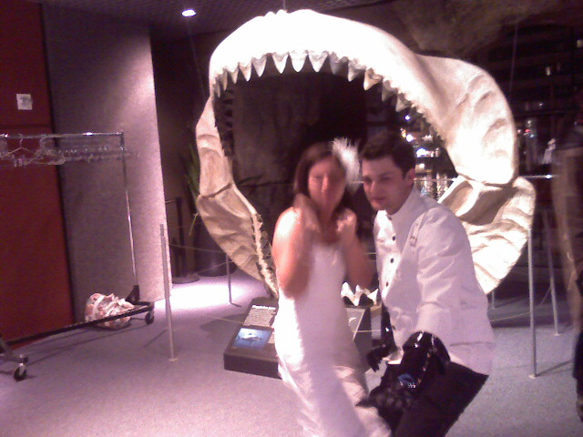

The Happy Couple

Posing in front of shark teeth with the groom in an evil scientist costume. Don’t worry he wasn’t wearing it all night.

Posing in front of shark teeth with the groom in an evil scientist costume. Don’t worry he wasn’t wearing it all night.
Chris and Pammy had a beautiful ceremony at the Baltimore Aquarium. During cocktail ceremony we get to walk around and see the fish while the newlyweds take family photos. Congrats!
The DC tech scene is just bursting at the seams with interesting (and free) tech events and un-conferences coming up this fall. I don’t know If I will be able to attend them all but here are a few that made it on to my radar.

Accessibility Camp DC is taking place at Martin Luther King Library on October 10, 2009. The event will cover topics and discussions about making the web more accessible.

PublicMediaCamp will be at American University on October 17 and 18, 2009. The event aims to put 100 developers, 100 public media supporters, and 100 people who work for public broadcasting companies in a room and see what comes of it.

TEDx Midatlantic will be held on November 5, 2009, at the Maryland Institute College of Art in Baltimore, MD. The event will feature presentations by many of the leading thinkers and doers in the MidAtlantic Region.

BarCamp3 is the grand daddy of all DC tech events. It will be at the Martin Luther King Library on November 14, 2009. This is always my favorite event of the year.
Kristina and I are taking the tour of the Jelly Belly factory in Fairfield. Afterwards we get to try a bunch of different flavors! Yum.
While peruzing the shops in downtown San Francisco we happened upon a Scotish import store. Ever since my trip to Scotland in the 7th grade, I have been craving a Yorkie bar. Now we are sitting in St. Mary’s Square/china town where I am about to eat it.
The San Francisco sea lions were out in full force both in numbers and odor. Pier 39 is windy and a bit chilly even on the hottest day of the year. Good thing we brought our jackets.
We sure picked a warm sunny day to tour San Francisco. We took the BART to the Embarcedero and then rode a cable car up to the hills of Lambard street. Now we’re off to go downhill to the Fisherman’s Wharf and Pier 39.
A platform full of sea lions lounging around and barking at each other as Kristina and I walk on the wharf above in Santa Cruz.

Three of my photos are on display at the Howard County Public School System Depart of Education building for an alumni art show. Howard County is where I went to school at Hammond elementary, middle, and high school. My pictures will be up until October 16th.
I forgot how children’s books can really stir up the imagination. The other night I was looking for a book that I had when I was a kid but couldn’t remember anything about the title, author, or publication date. What really stuck out at me was the illustration style. Along the way I discovered these illustrations from vintage children’s books.

Is There Life in Outer Space? Franklyn M. Branley ~ Don Madden ~ Thomas Y. Crowell, 1984

Angus and the Cat Marjorie Flack ~ Doubleday, 1931

Tico and the Golden Wings Leo Lionni ~ Knopf, 1964

Yellow & Pink William Steig ~ Farrar, Straus and Giroux, 1984

The Three Robbers Tomi Ungerer ~ Atheneum, 1962

Rotten Island William Steig ~ Godine, 1984

Tommy’s Trip to the Moon Illustrated by Elisabeth Halfdaner ~ English text by John Cotton ~ c.1950s (book is not dated)
More sources for vintage children’s books inspiration:
And the book that I was looking for was Drummer Hoff from 1968 illustrated by Ed Emberley. I love this book so much that I bought a signed copy on eBay after figuring out what I was looking for.